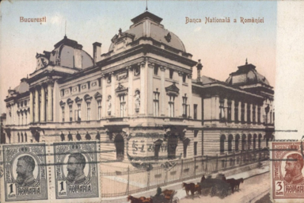

Macroeconomic environment of Alpha Centauri
This page explains in brief the most important economic factors that have an effect either
on the
Fund in general, or individual Investors depending where they are located.
Romania
Romanian government runs a budget deficit of around 8%. Furthermore, the coupons on governmental bonds, both in domestic currency RON and in EUR have incremental tendency.
These issues support the thesis of depreciating domestic currency against EUR, and byextension, USD. The presidential elections of 2025 introduced political risks as a nationalist candidate gained significant support.
Investors in Alpha Centauri are protected from depreciation of domestic currency RON, because the interest rate is accorded in USD.
Gold reserves of the Fund will also appreciate relative to domestic currency. In fact, the Fund Manager himself receives salary in RON, but he strives to convert RON either into gold or foreing currency as soon as possible.
Gold / RON BNR exchange rates, all Inflation forecast BNR IRCCThe United States of Americe
USA businesses will continue to do well. However, the main structural issue is the cronical, structural deficit that US government runs. After WWII, USA started abandoning principles of budget soundness in the name of accelerated economic growth.
The promise of economic, technological and military supremacy led to astronomic inflow of foreign capital into USA. Furthermore, the US Dollar being the reserve currency of the World created conditions where the USA is indeed the economic powerhouse of the World.
However, this status can not be taken as granted, as we have seen the recent actions of president Trump reversing the capital flows out of USA. Despite bad policies, the US Dollar is not going to disappear and USA will do well, but it may not continue to attract capital from all over the World.
Ralevant to Alpha Centauri is the oscilation of US Dollar strength (DXT). It is a measure of relative strength of the dollar towards six other major currencies. The DXY has a cyclical nature, but its position will partially have effect on strategic decisions of the Fund
DXY (US Dollar Index) Monetary policyCroatia
Croatia has done a lot to stabilize its finances, and reduce the national deby and budget deficit since joining the EU in 2013.In January 2023 Croatia adopted tue euro to replace its national currency, the Croatian Kuna (HRK), which facilitated transactions with other eurozone countries and eliminated the need for the Central bank to keep stabilizing the exchange rake HRK/EUR.
Having the euro as the currency, Croatian monetary policy is determinated by the European central bank (ECB).
Thus, for the Investors in Alpha Centauri the exchange rate EUR/USD set by ECB is the most relevant factor. The exchange rate usually fluctuates between 0.95 and 1.15 EUR/USD, and the fluctuation of the rate may present arbitrage opportunities when larger sums are in play.
European Central Bank, rate EUR/USD